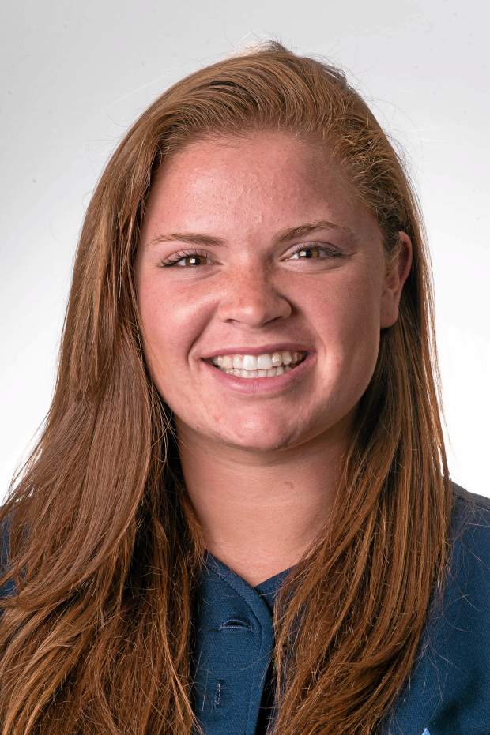
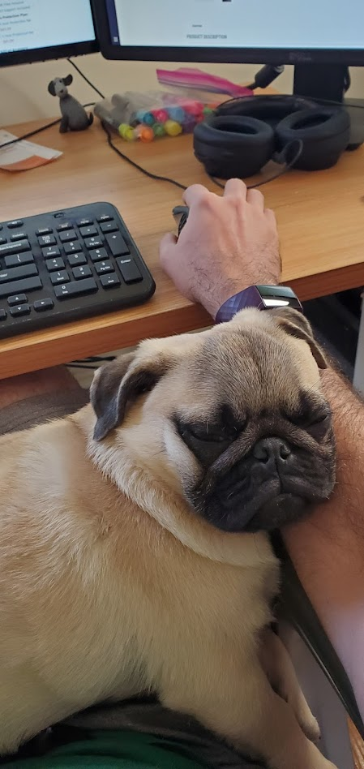
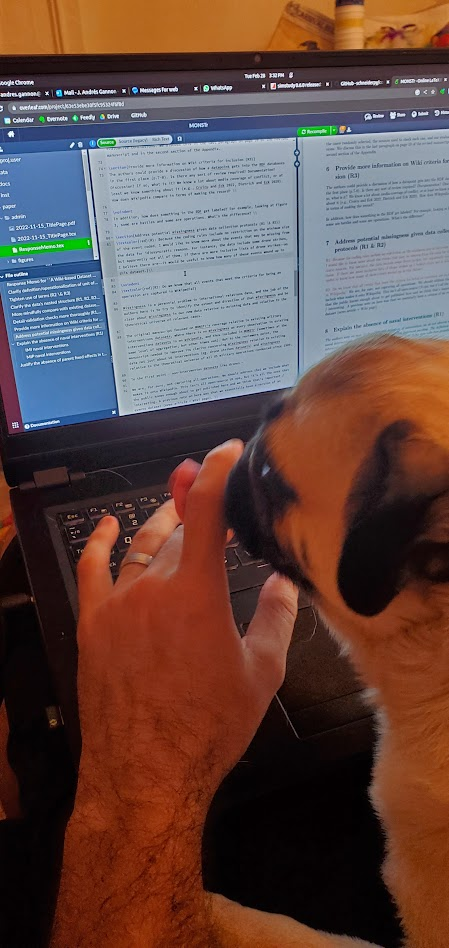

About
Project Directors

Kerry Chávez is an instructor in the Department of Political Science at Texas Tech University, where she completed her PhD in the summer of 2022. She is also a Non-resident Fellow with the Modern War Institute at West Point and a projects director at the Peace, War, and Social Conflict Lab.
J Andrés Gannon is a Stanton Nuclear Security Fellow at the Council on Foreign Relations and a Non-resident Fellow at the Eurasia Group Foundation. Starting Fall 2023, he will be an Assistant Professor of Political Science at Vanderbilt University and a Faculty Affiliate at the Data Science Institute. He earned his PhD in Political Science from UC San Diego in 2021.
Research Assistants

Financial and Administrative Support
The authors are grateful to the following institutions and their directors for financial, administrative, and technical support.
This project is dedicated to its namesake, Monster, without whom it would have been completed 12 months earlier.

